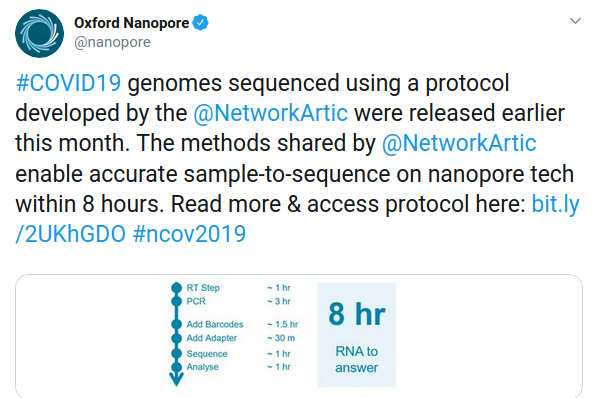
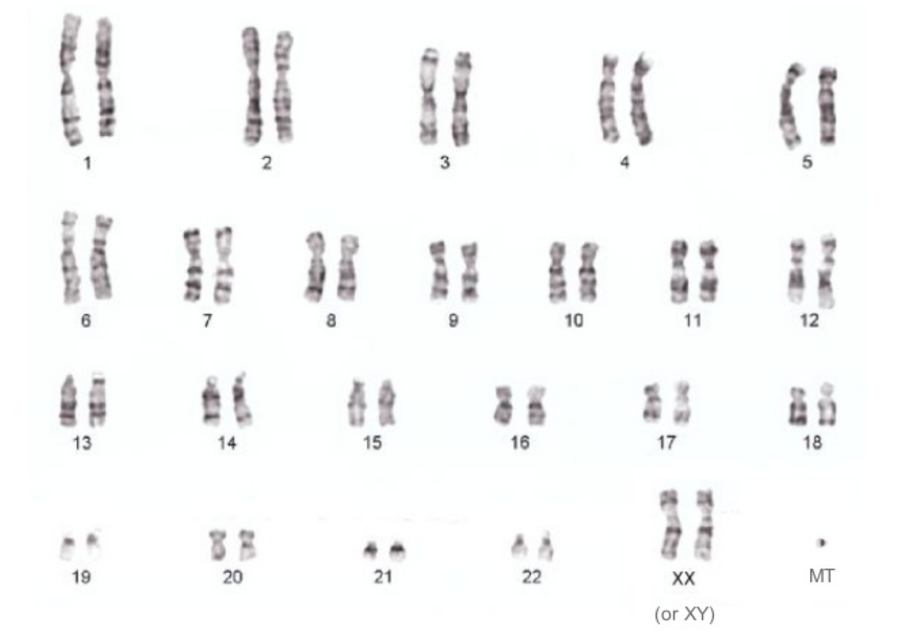
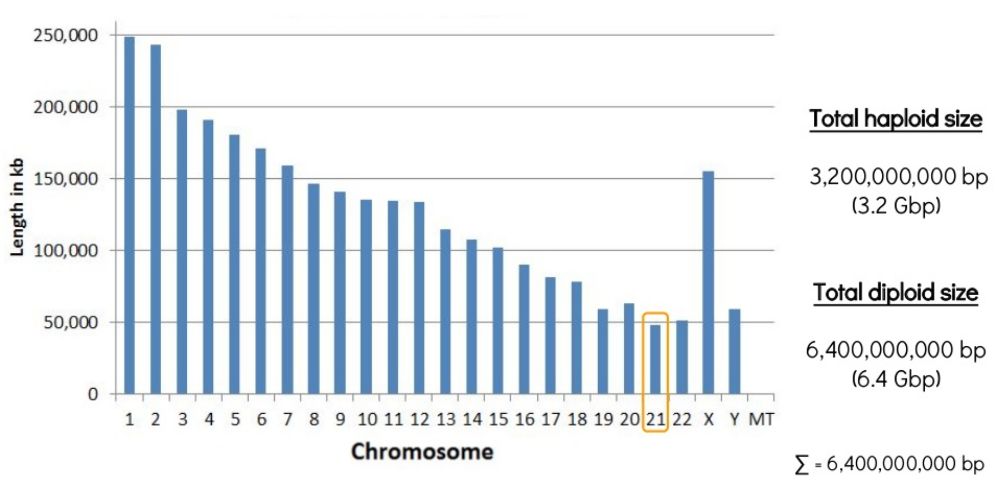

Principles and Applications of Modern
DNA Sequencing
EEEB GU4055
Session 10: Genome Assembly
Today's topics
1. Continued: long read technologies.
2. New: Genome assembly
3. Assignment: Kmers and graphs
Review of course topics
1. Intro to Jupyter/Python and history of genomics.
2. Python bootcamp I and genome structure.
3. Python bootcamp II and genome annotation.
4. Scientific Python and Homology.
5. Scientific Python and APIs/BLAST.
6. Recombination and Meiosis.
7. Inheritance and pedigrees.
8. Intro to Illumina and read mapping.
9. Intro to long-read technologies and read mapping.
10. Intro to Genome Assembly: Kmers and graphs
11. Genome Assembly: Hands-on.
12. The Coalescent and Genetic Diversity.
13. Phylogenetics and Phylogenomics.
14. Phylogenomics Continued and Midterm Review.
Where we left off: API queries
# search term
term = "FOXP2[GENE] AND Mammalia[ORGN] AND phylogenetic study[PROP]"
# make a request to esearch
res = requests.get(
url="https://eutils.ncbi.nlm.nih.gov/entrez/eutils/esearch.fcgi",
params={
"db": "nucleotide",
"term": term,
"sort": "Organism Name",
"retmode": "text",
"retmax": "20",
"tool": "genomics-course",
"email": "student@columbia.edu",
},
)
Where we left off: API queries
# the request object generates a URL to query the API
print(res.url)
'https://eutils.ncbi.nlm.nih.gov/entrez/eutils/esearch.fcgi?db=nucleotide&term=FOXP2%5BORGN%5D+Mammalia&sort=Organism+Name&retmode=text&retmax=20&tool=genomics-course&email=student%40columbia.edu'
Where we left off: API queries
# search term
term = "SARS-CoV-2[ORGN] complete genome"
# make a request to esearch
res = requests.get(
url="https://eutils.ncbi.nlm.nih.gov/entrez/eutils/esearch.fcgi",
params={
"db": "nucleotide",
"term": term,
"sort": "Organism Name",
"retmode": "text",
"retmax": "20",
"tool": "genomics-course",
"email": "student@columbia.edu",
},
)
Download data from NCBI: Coronavirus
# parse the fasta data and print only headers
fna = [i for i in fastas.strip().split("\n\n")]
for seq in fna:
print(seq.split("\n")[0][:90], '...')
>MN908947.3 Severe acute respiratory syndrome coronavirus 2 isolate Wuhan-Hu-1, complete g ...
>NC_045512.2 Wuhan seafood market pneumonia virus isolate Wuhan-Hu-1, complete genome ...
>MN938384.1 Severe acute respiratory syndrome coronavirus 2 isolate 2019-nCoV_HKU-SZ-002a_ ...
>MN975262.1 Severe acute respiratory syndrome coronavirus 2 isolate 2019-nCoV_HKU-SZ-005b_ ...
>MN985325.1 Severe acute respiratory syndrome coronavirus 2 isolate 2019-nCoV/USA-WA1/2020 ...
>MN988668.1 Severe acute respiratory syndrome coronavirus 2 isolate 2019-nCoV WHU01, compl ...
>MN988669.1 Severe acute respiratory syndrome coronavirus 2 isolate 2019-nCoV WHU02, compl ...
>MN988713.1 Severe acute respiratory syndrome coronavirus 2 isolate 2019-nCoV/USA-IL1/2020 ...
...
Long Read Technologies
PacBio and
Oxford Nanopore
currently offer two distinct technologies
for generating long sequenced reads that are now widely
used in genomics, particularly for the assembly of reference
genomes, but also for other purposes as well.
Your last assignment and reading introduced you to
long read data.
Long Read Technologies
PacBio has greater accuracy but is currently has an upper limit on read lengths (~20Kb). Nanopore reads have more errors but can provide contiguous information up to the size of physical DNA fragments (e.g., >1Mb).
Long Read Technologies
PacBio has greater accuracy but is currently has an upper limit on read lengths (~20Kb). Nanopore reads have more errors but can provide contiguous information up to the size of physical DNA fragments (e.g., >1Mb).
Nanopore is fast and portable
Nanopore Read-Until Targeting
Two papers (link) recently described a method for targeted sequencing with nanopores. The analysis API rejects DNA fragments that do not match a desired signal (e.g., region from a reference genome) thus enriching coverage of the target.
Long read assignment: functions revisited
def getLengthDistribution(thisFilePath):
"Return a list of lengths of each sequence in a fasta file."
lenList = []
for record in SeqIO.parse(thisFilePath, "fasta"):
lenList.append(len(record))
return lenList
def makeLengthPlot(thisRunName, ax):
"Plot the length plot for the raw sequence data"
# set histogram bin size
bins = range(500, 5000, 100)
# plots a matplotlib histogram onto 'ax' axes
sns.distplot(
getLengthDistribution(file_path[thisRunName]),
bins=bins,
kde=False,
color=colors[thisRunName],
ax=ax,
label=thisRunName,
hist_kws={"alpha": 1},
)
# style the axes and legend
ax.legend()
ax.set_xlim([1, 5000])
ax.set_ylabel('number of ' + str(thisRunName) + ' reads')
ax.set_ylim([0, 14000])
if thisRunName == 'Sanger':
ax.set_ylim([0, 800])
SeqIO
Loading fasta files as SeqIO record objects.
# The SeqIO module is useful for working with Fasta files
from Bio import SeqIO
# load a Fasta file from a path with Bio
record = SeqIO.parse(path, format="fasta")
# the record object makes the seq data accessible (e.g. length)
len(record)
600
# Global dictionary of technology name to file paths.
FILE_PATH = {
'Sanger': 'files/sanger.total.aftertrim.removeCT.min500bp.fasta',
'PacBio': 'files/PB.Cell1and2.raw.fasta',
'Nanopore': 'files/LejlaControl.2D.min500bp.fasta',
}
# Global dictionary of technology name to colors for plotting
COLORS = {
'Sanger': '#4daf4a',
'PacBio': '#377eb8',
'Nanopore': '#984ea3',
}
def makeLengthPlot(thisRunName, ax):
"Plot histogram of read lengths. Gets filepath from global dict"
# get readlengths
filepath = FILE_PATH[thisRunName]) # <--- global
lengths = getLengthDistribution(filepath)
# make histogram
sns.distplot(
length,
ax=ax,
bins=range(500, 5000, 100),
kde=False,
color=COLORS[thisRunName], # <--- global
label=thisRunName,
hist_kws={"alpha": 1})
# plot styling: legend, xlimit, ylabel, ylimit
ax.legend()
ax.set_xlim([1, 5000])
ax.set_ylabel('number of {} reads'.format(thisRunName))
ax.set_ylim([0, 14000])
# make unique y-axis label for each run
if thisRunName == 'Sanger':
ax.set_ylim([0, 800])
# initalize plot with 3 rows and 1 column
fig, ax = plt.subplots(nrows=3, ncols=1, figsize=(8, 20))
# Plot Sanger, Pacbio, and Nanopore read length distributions
makeLengthPlot('Sanger', ax[0])
makeLengthPlot('PacBio', ax[1])
makeLengthPlot('Nanopore', ax[2])
# add label to x axis
ax[2].set_xlabel('size [bp]')
# Show the plot
plt.show()
Challenge 4 (2 points): Print the top ten longest reads and average read length:
# 1. get filepath for Nanopore data set
npath = file_path["Nanopore"]
# 2. call getLengthDistribution on this file
readlens = getLengthDistribution(npath)
# 3. get top ten longest reads
topten = sorted(readlens)[::-1][:10]
print(topten)
# 4. get average length (of all reads)
avglen = sum(readlens) / len(readlens)
print(avglen)
[298549, 108360, 72322, 67205, 61366, 60592, 45980, 45605, 41057, 39953]
1512.50977897917
Oxford nanopore sequence mapping
# align nanopore reads (reads.fasta) to reference (ref.fa)
minimap2 -ax map-ont \
/home/codio/workspace/files/ref.fa \
/home/codio/workspace/files/reads.fasta \
> /home/codio/workspace/files/aligned.sam
[M::mm_idx_gen::0.187*0.88] collected minimizers
[M::mm_idx_gen::0.220*1.19] sorted minimizers
[M::main::0.221*1.19] loaded/built the index for 4319 target sequence(s)
[M::mm_mapopt_update::0.232*1.18] mid_occ = 11
[M::mm_idx_stat] kmer size: 15; skip: 10; is_hpc: 0; #seq: 4319
[M::mm_idx_stat::0.241*1.17] distinct minimizers: 731433 (98.40% are singletons); average occurrences: 1.024; average spacing: 5.463
[M::worker_pipeline::0.373*1.78] mapped 112 sequences
[M::main] Version: 2.15-r915-dirty
[M::main] CMD: ./minimap2/minimap2 -ax map-ont /home/codio/workspace/files/ref.fa /home/codio/workspace/files/reads.fasta
[M::main] Real time: 0.381 sec; CPU: 0.671 sec; Peak RSS: 0.053 GB
Challenge 8 (2 points): Look at the last alignment in the SAM file, how many mismatches or gaps?
%%bash
# show the last 1 line
tail -n 1 files/aligned.sam
4b09492e-1e14-4c2a-9719-4cd4f1434703 2048 gi|545778205|gb|U00096.3|:c728821-728732 1 9 2547H24M1I12M1D35M2I8M1D9M2887H * 0 0 GTGAGTGCAGGCGTGATAACCGGCATTATTGCTGGTGTTTTATTACTGGGTTATCTGGTTTGTAACCTGATCCAAATGCGGAGCGTTCTGA * NM:i:9 ms:i:126 AS:i:126 nn:i:0 tp:A:P cm:i:4 s1:i:48 s2:i:0 de:f:0.0870 SA:Z:gi|545778205|gb|U00096.3|:729583-733776,1,-,3723S1727M30D75S,60,164;gi|545778205|gb|U00096.3|:c728732-727059,1,+,2637S1663M11D1225S,60,171;gi|545778205|gb|U00096.3|:c727036-724988,1,+,4321S1163M11D41S,60,109;gi|545778205|gb|U00096.3|:729134-729340,1,-,3276S207M1I2041S,60,21; rl:i:0
Challenge 8 (2 points): Look at the last alignment in the SAM file, how many mismatches or gaps?
%%bash
# show the last 5 lines, and only the 12th delimited column
tail -n 5 files/aligned.sam | cut -f 12
NM:i:164
NM:i:171
NM:i:109
NM:i:21
NM:i:9
Challenge 9: Make a sorted BAM file from the SAM.
%%bash
# view as binary and direct to file (SAM -> BAM)
samtools view -b aligned.sam > aligned.bam
# sort and direct to file (BAM -> SORTED.BAM)
samtools sort aligned.bam > aligned.sorted.bam
# create index file (BAM -> BAM.BAI)
samtools index aligned.sorted.bam
# what are the file sizes?
du aligned.sam
du aligned.bam
Genome Assembly

Genome Assembly
denovo genome assembly is computationally demanding. Requires reads that cover the full genome many times (e.g., 50X). The end goal is to assemble scaffolds that match to chromosomes -- the real *bits* of the genome. 
Genome Assembly
Even the smallest chromosome of the human genome is 48Mbp! Genome Assembly
Sometimes intermediate/draft genomes are good enough to answer many questions. For many tasks, though, they are not. e.g., genome annotation. Trade off in costs and time.
Why do we need (complete) reference genomes?
(1) To study genome structural variation; (2) FAST mapping of sequenced reads to the reference to study variation in sequence or abundance (e.g., RNA); (3) Spatial genetic information is useful for association studies (e.g., GWAS; mapping traits) based on how variants segregate among offspring (i.e., genetic linkage);